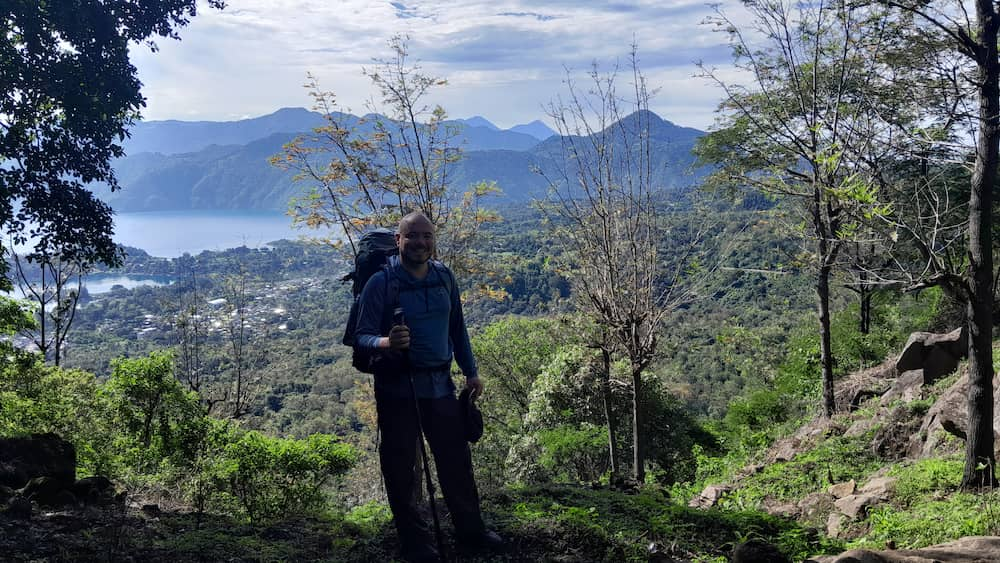

Douglas Caceres | WDD 130

My name is Douglas Caceres, I am from Guatemala and also live in Guatemala City which is the capital, I like to hike. I have hiked almost all of Guatemala Volcanoes, there are 37 volcanos in Guatemala and 3 of them are active I usually travel with a Travel Agency that provides guides and transportation in order to have a great experience when hiking I usually hike once a month, I live to hike volcanoes and visit lakes.